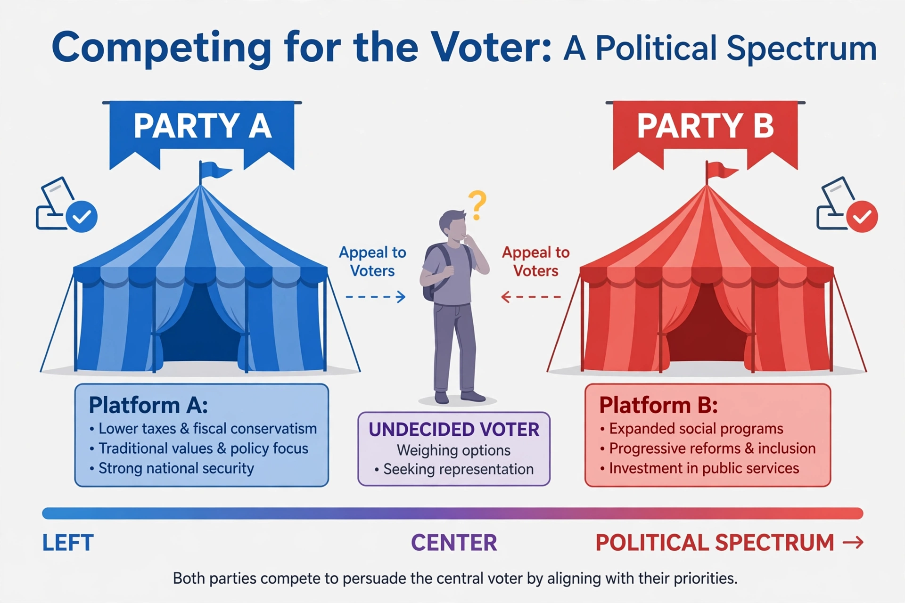

| Two-party system | |
|---|---|
 | |
| Type | Party system |
| Examples | United States; historically the United Kingdom, Australia (with preferences), Jamaica, Malta |
| Related concepts | Duverger's law; median voter theorem; dominant-party system |
A two-party system is a party system in which two major political parties consistently dominate the political landscape, regularly alternating in government, while smaller parties rarely win significant representation. At one end of the spectrum of party systems classified by Giovanni Sartori, it contrasts with multiparty systems and with predominant-party systems such as those of Japan's LDP or Singapore's PAP.
The French sociologist Maurice Duverger argued that plurality elections in single-member districts ("first-past-the-post") tend toward two-party competition — "Duverger's law" — through a mechanical effect (third parties are under-represented by the seat allocation) and a psychological effect (voters and donors avoid wasting support on hopeless third parties). Winner-take-all institutions such as the United States Electoral College reinforce the tendency. By contrast, proportional representation tends to sustain multiparty systems.
Supporters argue that two-party systems offer clarity of responsibility, stable majorities and centripetal competition for the median voter, as modelled by Anthony Downs. Critics argue they restrict voter choice, encourage polarisation when the parties sort into hostile camps, and leave many preferences unrepresented. The United States, where the Democratic and Republican parties have monopolised national power since the 1850s, is the most cited case; the United Kingdom, once the textbook example, has seen growing third-party strength in Scotland and elsewhere since the 1970s.
Party-system scholars build on the cleavage theory of Lipset and Rokkan: the number of parties tends to reflect how many social cleavages were politicised when mass parties formed, filtered by electoral rules.
Giovanni Sartori · Gill v. Whitford · African National Congress